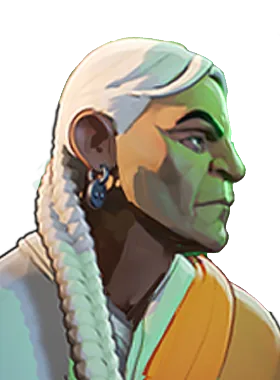

Estaca Stake
Lança uma estaca que prende inimigos ao local onde ela cai, limitando o movimento ao comprimento da corrente.
Estaca Stake
Lança uma estaca que prende inimigos ao local onde ela cai, limitando o movimento ao comprimento da corrente.
 Voo Flight
Salta e voa, dando à arma dano espiritual bônus e maior alcance de itens enquanto está no ar.
Voo Flight
Salta e voa, dando à arma dano espiritual bônus e maior alcance de itens enquanto está no ar.
 Corvo Familiar Crow Familiar
Envia um corvo que causa dano de impacto, reduz a resistência a balas e espiritual do alvo e aplica sangramento baseado na vida atual dele.
Corvo Familiar Crow Familiar
Envia um corvo que causa dano de impacto, reduz a resistência a balas e espiritual do alvo e aplica sangramento baseado na vida atual dele.
 Assassinar Assassinate
Dispara um tiro de sniper de longo alcance com mira que causa dano extra a inimigos abaixo de 50% de vida.
Assassinar Assassinate
Dispara um tiro de sniper de longo alcance com mira que causa dano extra a inimigos abaixo de 50% de vida.
Atiradora de longo alcance, pune erros de posicionamento.
História
Vítima de John Hathorne durante os Julgamentos das Bruxas de Salem, Vindicta teve uma segunda chance de vida quando seu espírito foi trazido de volta ao plano mortal durante o primeiro Maelstrom (o evento que apresentou o sobrenatural ao público em geral).
Travando uma guerra fantasma contra "Os Amigos da Humanidade", uma neoinquisição formada pelos descendentes de Hathorne; Vindicta procura manter o sobrenatural a salvo da turma de Hathorne, e ela não tem medo de empilhar quantos corpos forem necessários para isso.
História oficial do jogo, traduzida automaticamente para o português.
Números reais
Habilidades
Lança uma estaca que prende inimigos ao local onde ela cai, limitando o movimento ao comprimento da corrente.
Salta e voa, dando à arma dano espiritual bônus e maior alcance de itens enquanto está no ar.
Envia um corvo que causa dano de impacto, reduz a resistência a balas e espiritual do alvo e aplica sangramento baseado na vida atual dele.
Dispara um tiro de sniper de longo alcance com mira que causa dano extra a inimigos abaixo de 50% de vida.
Builds mais usadas
31.813 partidas registradas com esta build.
Rodadas de alta velocidade (800) · Rodadas de Abertura (1.600) · Espírito Extra (800) · Espírito Melhorado (1.600) · Taxa Extra (800) · Recarga Mercúrio (1.600) · Recarga rápida (3.200) · Longo alcance (1.600) · Velocidade duradoura (1.600) · Atacante Rápido (1.600)
31.365 partidas registradas com esta build.
Rodadas de alta velocidade (800) · Rodadas de Abertura (1.600) · Espírito Extra (800) · Espírito Melhorado (1.600) · Taxa Extra (800) · Recarga rápida (3.200) · Velocidade duradoura (1.600) · Longo alcance (1.600) · Atacante Rápido (1.600) · Contrafeitiço (3.200)
17.841 partidas registradas com esta build.
Explosão Mística (800) · Espírito Extra (800) · Botas de corrida (800) · Taxa Extra (800) · Colecionador de Troféus (1.600) · Recarga rápida (3.200) · Velocidade duradoura (1.600) · Pé Ligeiro (1.600) · Longo alcance (1.600) · Rodadas de alta velocidade (800)
Confrontos reais
 Pocket — 55.8% de vitória
Pocket — 55.8% de vitória Shiv — 55.4% de vitória
Shiv — 55.4% de vitória Mirage — 54.6% de vitória
Mirage — 54.6% de vitória Solomon — 54.1% de vitória
Solomon — 54.1% de vitória Viscous — 54.0% de vitória
Viscous — 54.0% de vitória Warden — 53.8% de vitória
Warden — 53.8% de vitória
 Graves — 42.1% de vitória
Graves — 42.1% de vitória Paige — 43.1% de vitória
Paige — 43.1% de vitória Rat King — 43.7% de vitória
Rat King — 43.7% de vitória Kelvin — 44.7% de vitória
Kelvin — 44.7% de vitória Haze — 45.7% de vitória
Haze — 45.7% de vitória Seven — 45.7% de vitória
Seven — 45.7% de vitória
Ver a página de counters do Vindicta
O que upar primeiro
Nível por nível, na ordem que os jogadores mais usam em partidas de verdade. A porcentagem mostra quantos escolheram aquela habilidade naquele nível.
Melhores duplas
Heróis que mais ganham jogando junto com ele, em partidas reais (pelo menos 1.500 partidas juntos).
- Rat King58,0%
- Graves56,5%
- Paige55,6%
 Victor55,3%
Victor55,3%- Haze54,1%

Grey Talon43,5% Sinclair43,8%
Sinclair43,8%- Mirage44,2%
Rota (lane)
Na rota, cada lado joga em dupla. Estes números são de confrontos reais: a diferença de almas é medida com o jogo já começado, então almas no verde significa que ele costuma estar na frente.
- Graves — 39,0% de vitória −23 almas (7.350 partidas)
- Paige — 39,9% de vitória −20 almas (1.763 partidas)
- Rat King — 43,0% de vitória −141 almas (27.863 partidas)
 Violet — 43,0% de vitória −326 almas (454 partidas)
Violet — 43,0% de vitória −326 almas (454 partidas) The Doorman — 43,4% de vitória +483 almas (249 partidas)
The Doorman — 43,4% de vitória +483 almas (249 partidas) Apollo — 43,8% de vitória −725 almas (386 partidas)
Apollo — 43,8% de vitória −725 almas (386 partidas) Baba — 44,5% de vitória +610 almas (1.936 partidas)
Baba — 44,5% de vitória +610 almas (1.936 partidas)- Haze — 45,1% de vitória −451 almas (13.716 partidas)
- Shiv — 57,5% de vitória +178 almas (266 partidas)
 Billy — 56,2% de vitória +370 almas (877 partidas)
Billy — 56,2% de vitória +370 almas (877 partidas) Wraith — 54,8% de vitória +265 almas (157 partidas)
Wraith — 54,8% de vitória +265 almas (157 partidas)
Histórico de win rate
14/09: 44.2% → 02/11: 46.5% → 21/12: 47.2% → 08/02: 46.8% → 29/03: 47.8% → 17/05: 47.8% → 05/07: 50.2% → 23/08: 51.2% → 11/10: 49.8%